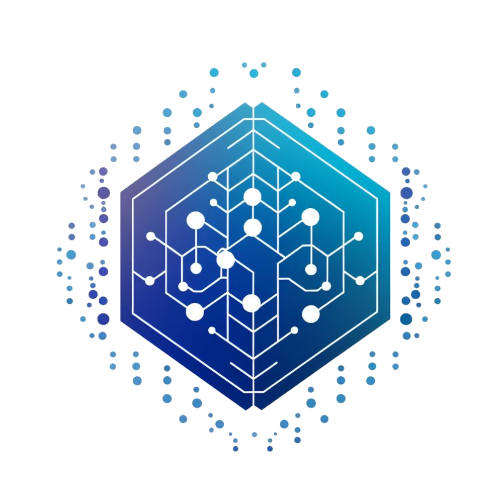

Procesos
Automatización que reduce tareas repetitivas.

LEORICONSULTING S.A.C. ConversemosMÁS CONTROL · MENOS TRABAJO MANUAL
Te ayudamos a ordenar procesos, ahorrar tiempo y tener información clara para tomar mejores decisiones.
Automatización que reduce tareas repetitivas.
Software ajustado a la operación real.
Información compartida entre tus sistemas.
Sistemas más estables y fáciles de usar.
DOS LÍNEAS, UNA MISMA CALIDAD
PYMES DE ICA
Sistemas de ventas, inventario, asistencia, reportes y automatización para negocios que necesitan control y rapidez.
CONSULTORAS Y EMPRESAS TECNOLÓGICAS
Apoyo especializado para avanzar proyectos, integrar plataformas y mejorar sistemas empresariales sin sobrecargar a tu equipo.
CAPACIDADES
Ventas, inventario, asistencia y reportes adaptados a tu forma de trabajar.
Menos trabajo repetitivo, menos errores y más tiempo para atender el negocio.
Integramos tus aplicaciones para evitar registros duplicados y datos dispersos.
Mejoramos aplicaciones antiguas de manera gradual, sin detener la operación.
Identificamos fallas, lentitud y riesgos para recuperar la estabilidad del sistema.
Te ayudamos a elegir una solución viable antes de invertir tiempo y dinero.
EXPERIENCIA APLICADA
Ejemplos de proyectos en los que hemos participado. Presentamos la información de forma general para respetar la confidencialidad de cada organización.
MODERNIZACIÓN
Ayudamos a renovar componentes antiguos de forma gradual para facilitar su mantenimiento y mantener la continuidad de la operación.
COMUNICACIONES
Revisamos y mejoramos una solución preparada para procesar aproximadamente 1.6 millones de solicitudes al día de forma estable.
AUTOMATIZACIÓN
Automatizamos la lectura y el procesamiento de documentos para reducir tareas manuales y facilitar el seguimiento de cada operación.
CONTROL DE PERSONAL
Desarrollamos una solución para registrar horarios, comprobar el lugar de marcación y enviar avisos automáticos.
UNA FORMA SIMPLE DE EMPEZAR
DIAGNÓSTICO
Revisión del problema, riesgos y hoja de ruta priorizada.
Desde S/ 500Alcance confirmado antes de iniciar.MÁS SOLICITADO
Diagnóstico y solución de los problemas que afectan la operación.
Desde S/ 1,000Intervención de alcance cerrado.A MEDIDA
Automatización o módulo web diseñado según la operación.
Previa evaluaciónPropuesta por etapas y entregables.EXPERIENCIA QUE RESPALDA
En LEORI CONSULTING S.A.C. entendemos primero cómo funciona tu empresa y qué necesitas mejorar. Luego proponemos una solución realista, con alcance, etapas y entregables claros.
Para consultoras y equipos tecnológicos, aportamos experiencia especializada en sistemas empresariales, integración y desarrollo Java, manteniendo una comunicación directa durante todo el proyecto.
HABLEMOS DE TU RETO
Cuéntanos qué proceso quieres mejorar o qué sistema necesita atención.
WhatsApp: 922 319 142